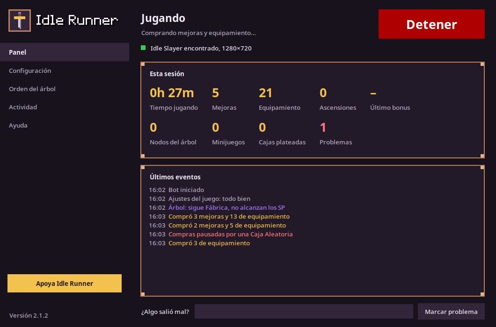
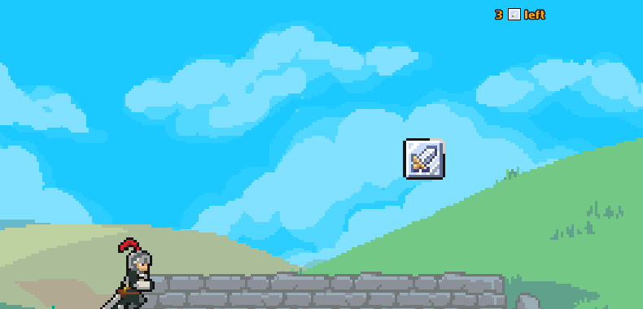
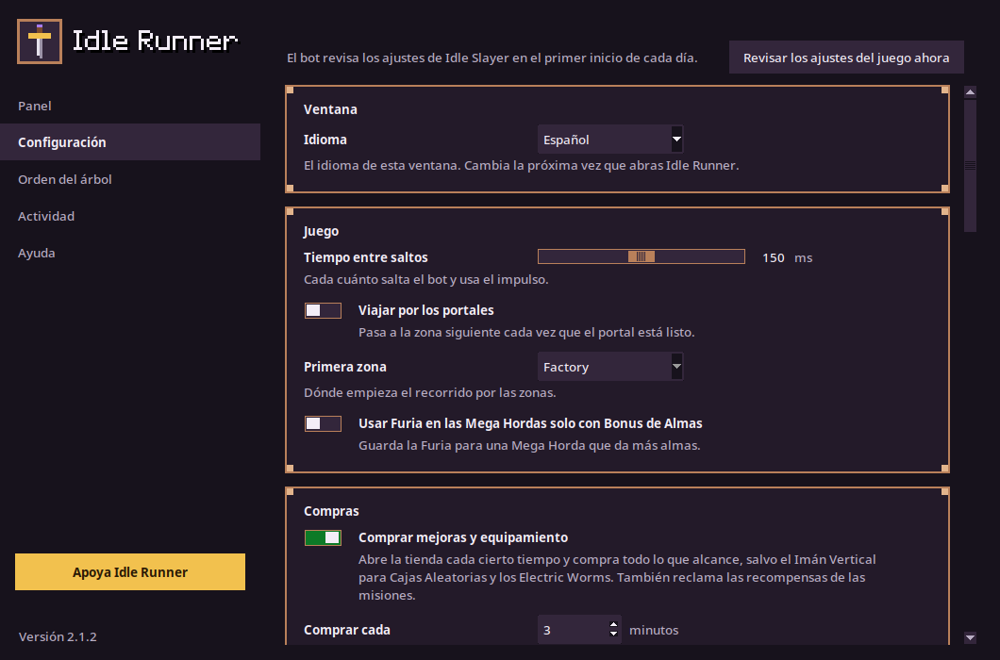

Pulsa Iniciar, haz clic en el juego y déjalo jugar. Cambia a otra ventana para pausarlo y haz clic en el juego para seguir.
Qué hace
Es más que un autoclicker: lee la pantalla, así que reacciona a lo que muestra el juego.
- Corre
- Salta y usa el impulso sin parar, al ritmo que elijas.
- Recoge
- Las cajas plateadas y naranjas, las recompensas de las misiones, dos Misiones Diarias extra y el Bonus Diario de los súbditos por día, y tus súbditos cuando vuelven de sus misiones.
- Compra
- Mejoras y equipamiento cada pocos minutos, y envía a tus súbditos a sus misiones.
- Viaja
- Entra en los portales y, si quieres, recorre las zonas una tras otra.
- Usa la Furia
- En las Mega Hordas, y si quieres solo con Bonus de Almas.
- Juega los minijuegos
- Cacerías de Cofres, Etapas Bonus 2 y 3, Ascending Heights y la pelea contra Victor.
- Asciende
- Cuando el "+X% bonus de MpS" llega al 20 %, o cada 30 minutos como máximo. Puedes cambiar los dos valores o desactivarlo.
- Gasta SP, si quieres
- Compra nodos del Árbol de Ascensión en tu orden después de cada ascensión.


Lo que nunca hace
- Leer o cambiar la memoria, los archivos, las partidas guardadas o el tráfico de red del juego. Solo ve píxeles y envía teclas y clics.
- Gastar gemas. Cuestan dinero real, así que cierra cualquier oferta que las pida.
- Usar Ultra Ascender.
- Gastar tus Puntos de Asesino en el Árbol de Ascensión, salvo que actives esa opción.
Cómo empezar
Prepara el juego
- En ventana a 1280x720, en español o en inglés.
- Salto en la flecha arriba e impulso en la flecha derecha.
- Desactivar el cursor personalizado activado; Confirmar diálogo al activar el portal y Usar notación científica desactivados.
- Compra masiva redondeada y Ocultar recompensas de Misiones Bloqueadas activados.
- No compres el Imán Vertical para Cajas Aleatorias.
El bot lee estos ajustes en el primer inicio de cada día y te avisa si alguno está mal.
Linux
- Descarga el
linux-x64.tar.gzy descomprímelo. - Ejecuta
./install.shen la carpetaIdleRunner. Agrega Idle Runner al menú de aplicaciones. - Abre Idle Runner y pulsa Iniciar.
Ubuntu 22.04, Fedora 36 o más nuevo, con la versión de Steam del juego para Linux.
Windows
- Descarga el
windows-x64.zipy descomprímelo. - Haz doble clic en
IdleRunner.exey pulsa Iniciar.
La aplicación no tiene firma de código, así que Windows puede decir que protegió tu PC. Elige Más información y luego Ejecutar de todas formas.
¿Algo no funciona? El README tiene consejos para resolver problemas, y puedes reportar un problema.